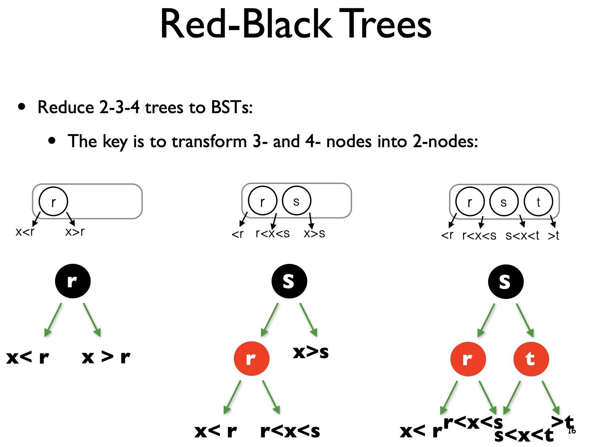
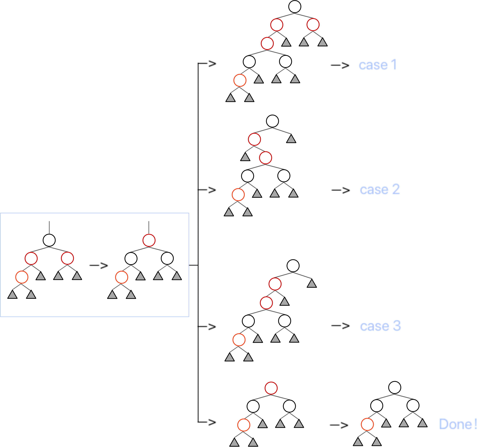
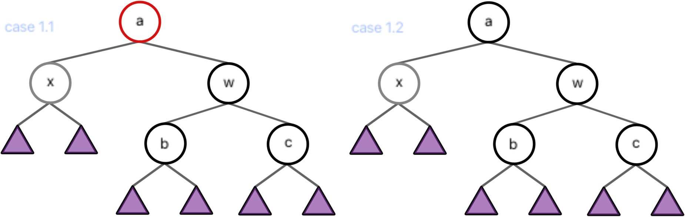
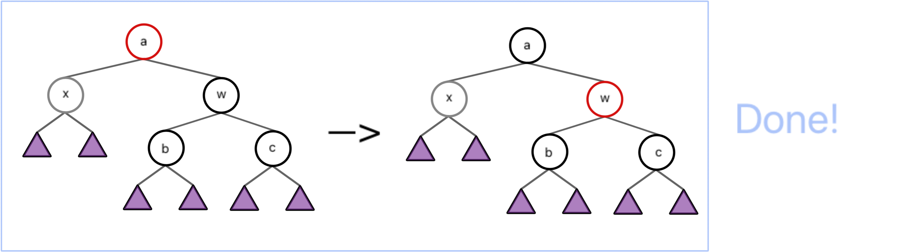
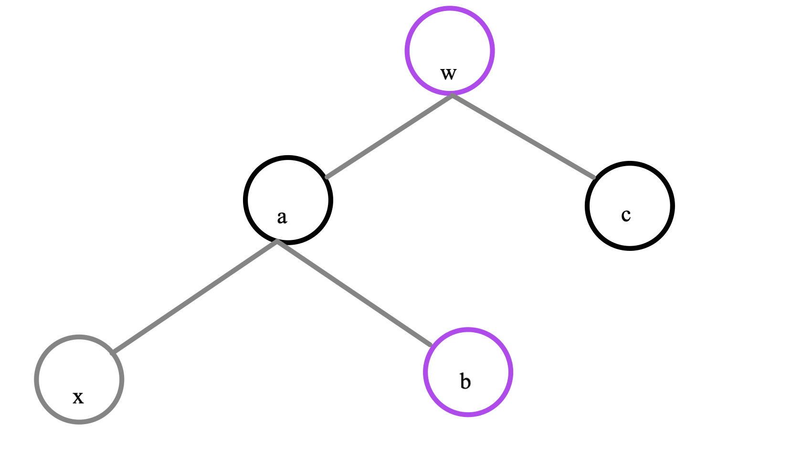
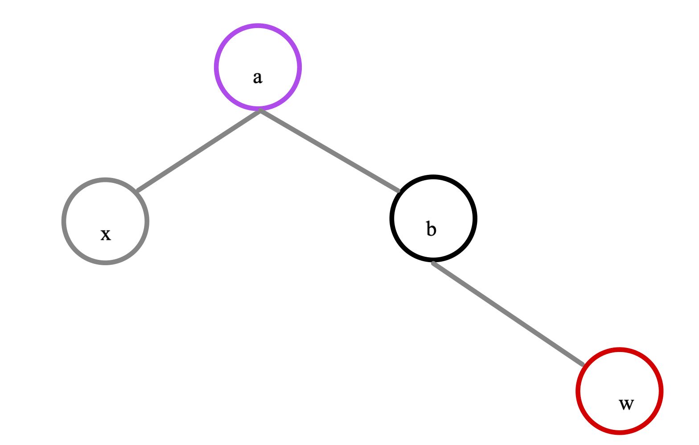

lec2|Red Black Trees & B+ Trees
约 3453 个字 37 张图片 预计阅读时间 12 分钟
红黑树¶
2-3-4 树
- 先来看看
M-Ary多叉树
{kind=link}
- 于是我们有了2-3-4树
- 所有叶节点必须有相同的depth，即每个
internal node的Children必须完备
{kind=link}
{kind=link}
{kind=link}
{kind=link}
{kind=link}
{kind=link}
{kind=link}
{kind=link}
{kind=link}
- 然后我们把2-3-4树，转换成二叉树，得到了红黑节点，红是黑的附属
- 黑节点才是关键!!! 
{kind=link}
概念¶
- 红黑树(Red Black Tree)就是一种节点分类为红黑两色的，比较平衡的二叉搜索树。只不过不同于 AVL 树，红黑树的“平衡”性质是通过黑高(black height)来定义的。接下来依次给出红黑树的定义和黑高的定义。
1. 每个节点要么是红要么是黑
2. 根节点一定是黑的
3.NIL节点（空叶子节点）为黑；
4. 红色节点两个孩子都一定是黑色（另一种说法，红节点不会连着）（因为有孩的红节点其实是父节点，孩即分支）
5. 从根节点到NIL节点的每条路径上，包含相同数量的黑色节点（转换成2-3-4树好理解，因为叶节点同层高）
叶节点
- 在红黑树中叶节点被定义为了
NIL空节点，而不是可见的末端节点
Definition: black-height
- 节点
x的black-height记作bh(x)，表示从x到叶节点的简单路径上（不包括x）的黑色节点数 - 引理：
- 一颗\(N\)节点的红黑树的高度最多为 \(2log_2(N+1)\)
证明
- 首先我们显然有 \(N\geq 2^{bh}-1\)，也就是\(bh \leq log_2(N+1)\)
- 然后显然有 \(2bh(Tree)\geq h(Tree)\)
辨析
{kind=link}
{kind=link}
-
根据 T1 的解析，我们得到这样一个结论：
-
合法红黑树不存在只有一个非叶子节点的红色节点！
or
- 合法红黑树的红色节点的两个子节点一定都是叶子或都不是叶子！
操作¶
- 类比2-3-4树
- 红黑树的操作是两侧对称了，下面只讨论一侧
- 但是实际可能更得死记硬背:-(
Insertion¶
-
我们知道，对黑高有贡献的只有黑色节点，因此
NIL节点被一个红色节点置换并不会改变一颗红黑树的黑高，因为红色节点还会有一层NIL子节点；然而对于红色节点，却有着红色结点互不相邻的限制。 -
因此，“插入”操作的主要思路就是，先将整个红黑树当作一个普通的二叉搜索树，将目标数据插入到树的末端（也就是置换一个
NIL节点），并将它染为红色，再调整使之在保证黑高不变的情况下，满足红色节点不能相邻的要求。 -
现在，我们记这个被插入的节点为
x，任意一个节点node的家长节点为node.p，则：
- 如果
x.p是黑色的，那么我们不需要做任何调整； - 如果
x.p是红色的，那么我们需要进行调整；- 此时因为原来的树符合红黑性质，
x.p.p必定存在（红x.p不能是根）且必定是黑色的；
- 此时因为原来的树符合红黑性质，
- 根据这些讨论，我们就能列举出来一个红色的点被插入后，在
2.的情况下所有的初始情况，即下面第一张图。 - 由于红黑树的操作中，有一部分需要进行递归转移，而其中中间步骤出现了很多同构的结构，所以为了简化说明，我们对其进行统一，所有情况都被归纳为第二张图。
- 而第二张图中提到的橙色结点，也就是标为“被插入的红色节点”的结点，实际过程中并不一定指的是被「插入」的那个点，也可能是在 case 1 向上递归时，简化的原来那颗子树。换句话来说，这里的“被插入的红色节点及其子树”，实际上可能是指「导致红黑性质被破坏的红根子树」。
{kind=link}
- 下面从case 3->case 1由简到难进行处理
{kind=link}
case 2
- 对于case2，只需要一次rotation就可以得到case3
- 这里相当于插入的x是中间值，于是我们拿上去作为黑节点
- case2，3其实都像Avl树中的Single和DoubleRotation
{kind=link}
case 1
- 对于case1，其实就对应父节点中装4个爆了
- 那么我们就采取把原中间值的父上移，然后剩余的3个节点就自然分成两部分成为其子
- 在红黑树中就表现为原来三个父的变色
- 然后变色（上移）后就开始分类讨论即可，最后一种情况就是遇到了根节点；这就是插入操作的递归处理 
{kind=link}
- 最终整个插入操作就三种case，表示为一个状态机即为
graph LR; A["case 1"] B["case 2"] C["case 3"] D(["finish"]) A ===>|"C"| B --->|"R"| C A ===>|"C"| A --->|"C"| D A ===>|"C"| C --->|"C&R"| D
Delete¶
- 要删除某个节点 x，我们首先要找到它，在 BST 中找到某个 x 的开销为 \(O(logN)\)。接下来我们要删除这个任意位置的节点，这势必让红黑树的结构发生变化。此外，红黑性质的维护也是一个让人头疼的问题，因此，我们对这些情况做分类讨论：
没有非NIL子节点 |
有一个非NIL子节点 |
有两个非NIL子节点 |
|---|---|---|
| 直接用NIL节点代替 | 直接删除，用子节点替代 | 将值与左子树最大值或右子树最小值交换，颜色不换，然后删除目标点 |
-
其中，每一项操作都会导致一个点的消失（毕竟是删除），而如果消失的是红色节点，那么将不会影响黑高；而如果消失的是黑色节点，那么将会导致黑高减少一，此时我们需要做进一步操作。
-
我们将情况分为四种
{kind=link}
case1
- 把它按照 a 节点的红黑，分为两种情况。

{kind=link}
- 当 a 为红根时，由于 x 贡献了（相对于原红黑树）-1 的黑高，为了保证整个子树贡献的黑高不变，我们考虑把 w 的黑高“上放”到 a 上，也就是从下面“吸纳”上来。

{kind=link}
- 当 a 为黑根时，我们没有空余的位置来“吸纳” w 的黑高，但是左子树和右子树的不平衡是必须解决的，同时不能寄希望于“在不知道有没有红色节点的 b 和 c 的子树中去寻找红色节点”这个想法。
- 所以我们可以仿照「Insertion / case 3」，将整个树标记为灰色——「由于删除结点，黑高 -1 的子树」，然后进一步根据其家长节点的情况递归到其他 case。其中，当我们递归到 a 是整个树的根时可以退出，因为这相当于整个树的黑高 -1，不影响红黑性质。
{kind=link}
case2
- 将 w 染为 a 的颜色，再将 a 和 c 染成黑色；
- 将 a 左旋，使 w 成为这个子树新的根，a 成为 w 的左儿子，b 成为 a 的右儿子；

{kind=link}
case3
- 交换 b 和 w 的颜色；
- 将 w 右旋，使 b 成为 a 的右儿子，w 成为 b 的右儿子，b 的右儿子成为 w 的左儿子；
- 此时情况转化为 case 2；
- 其实这就是把b这个中间者上提，进行了一个DoubleRotation

{kind=link}
case4
- 交换 a 和 w 的颜色；
- 将 a 左旋，使 w 成为这个子树新的根，a 成为 w 的左儿子，b 成为 a 的右儿子；
- 此时根据子树 a 的情况，转化为 case 1.1 / case 2 / case 3；
B+树¶
-
B+ 树是一种用树状形式维护有序数列比较信息的数据结构，其增改操作拥相对于二叉树结构更加稳定的对数时间复杂度，通常用于数据库和操作系统的文件系统中。
-
上面所说的2-3树和2-3-4树都是B树，但是ADS这本课只讲B+树
- 所以作业与考试中的2-3树、2-3-4树都视作B+树！！！
B树
- m称为B树的阶(order)
- 树中每一个节点最多有m棵子树，也就是最多有m-1个key。
- 如果根节点不是末端节点，那么根节点至少有两棵子树。
- 除了根节点之外所有的非叶节点至少有\(\left \lceil \frac{m}{2}\right \rceil\)棵子树。（符号表示向上取整），也就是至少含有\(\left \lceil \frac{m}{2}\right \rceil-1\)个keys。
概念¶
- 如下图就是一颗 \(M=4\) 的 B+ 树，可以对照着这个例子来理解性质。

性质
- 如果根节点不是末端节点，那么根节点至少有2棵子树
- 除了根节点之外所有的非叶节点至少有\(\left \lceil \frac{m}{2}\right \rceil\)棵子树。（符号表示向上取整），也就是至少含有\(\left \lceil \frac{m}{2}\right \rceil-1\)个keys。
- 叶节点必须都在同一层
- 所有真实的数据都被存储在叶子节点中，形成一个有序的数列。而非叶子结点中第 \(i\) 个键值等于其第 \(i+1\) 棵子树的最小值（在上图中表现为颜色相同的一对上下结点），因此非叶结点最多存 \(M-1\)个值
- 于是我们发现这样一个性质：在存储数值不重复的情况下，非叶结点存储的键值都不相同。
- 我们称这样的树为一个 M 阶(order) B+ 树。对于常见的 M，比如一棵 4 阶 B+ 树，我们也称之为一棵 2-3-4 树，一般 M 的选择为 3 或 4。
- 特别说明，对于 B+ 树，将它的叶子结点拼接起来，实际上就是一个有序数列。
Abstract
- 抽象地来说就是，我们把一个数列相对均匀的分为 \(m\) 块，然后把分界的数拿出来。当我们去查找或插入时，只需要和这些边界数进行比较，就知道它应该放在哪一块里。再不断细化粒度，用类似于“m 分”的思想来找到目标位置。
- 这个定义非常清晰，就是将整个序列按照不同粒度划分，然后由大到小进行逼近。
操作¶
- to be continued
-
查找¶
- 与二叉树的查找类似，比较然后分支

{kind=link}
{kind=link}
{kind=link}
插入¶
-
插入的方法也相对朴素简单，就是找到该插入的地方以后插入即可。
-
只不过需要注意一件事，当这个插入，导致了 B+ 树的性质不再成立时，即导致其家长节点的子节点数量为 \(M+1\) 时，我们需要将这个结点平均分裂成两个，此时显然有两个子树的节点数量都不大于 \(⌈M+1⌉\)。但这还不够，分裂导致家长节点的家长节点的子节点变多，所以我们还得向上递归。
Insert(44) with split
{kind=link}
{kind=link}
{kind=link}
{kind=link}
{kind=link}
{kind=link}
删除¶
-
删除叶结点中相应的数据，如果需要的话：
-
从其他叶结点借来键值
-
和其他叶结点合并
-
Example
- After deleting 9 from the 2-3 tree given in the figure, which one of the following statements is FALSE?
{kind=link}
A. the root is full
B. the second key stored in the root is 6
C. 6 and 8 are in the same node
D. 6 and 5 are in the same node
答案
{kind=link}
历年题
Both AVL trees and red-black trees need at most O(1) rotations per insertion.(True or False?)
{kind=link}